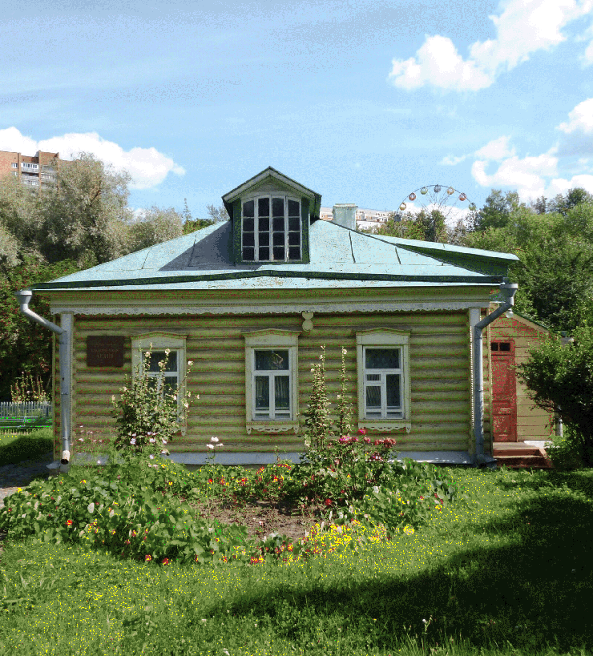

Сегодня музей-заповедник сохраняет фрагменты исторической среды бывшего села Подол, часть исторической застройки Подольска и ценные памятники археологии в исторической части города. Охранная зона охватывает значительную и наиболее целостно сохранившуюся часть Подольска в границах XIX века. Являясь мемориальным заповедником разновременных эпох, сохраняя историческую среду и ядро формирования города, музей показывает исторические эпохи от первых поселений до рождения и развития градостроительной структуры города, что позволяет проследить преемственную связь времён и поколений.
